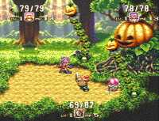

|

Review

Game Type: Overhead view adventure
We received the first 2 games in the Seiken series as Final Fantasy
Adventure for Game Boy and Secret of Mana for SNES. The series mixes
Zelda-style gameplay with elements from Square's other RPGs, including
spellcasting.
Gameplay: 70/100
Although arguably an improvement from Secret of Mana with a faster
pace in the battles, from me that's not saying much since I never liked
SoM's gameplay all that well. The character movement engine seems no more
solid. [Note: This review originally stated that a three-player mode is
available as in Seiken Densetsu 2/Secret of Mana, but attempts to start up
with three players have since proven unsuccessful. It appears the game
only supports two players simultaneously. Apologies for the incorrect
information and thanks to kevwalt.] The ability for any
character to use any weapon has been lost. But with 6 characters to choose
from (you choose 3 of these to be in your party over the course of a
game), each with his or her own weapon type, there's still a fair amount
of variety. A new addition is the element of day and night, and you may
encounter different people in the towns or creatures in the wilds after
nightfall. You'll spend just as much time as in SoM wandering around with
no clue where to go next, unfortunately, and still more if you can't read
Japanese.
Graphics: 80/100
Background graphics are about on the same level as in SoM (i.e. nice
but nowhere near as good as Chrono Trigger's). The spell effects have been
improved, however, and are now highly similar to Final Fantasy III's. The
characters and enemies seem to have taken a turn for the worse. The walking
and running animations are extremely awkward, and many of the enemies
are leftovers from SoM (looking much the worse for wear). At least now the
players always face the enemy in battle, even while backing away, which
is a nice touch.
Sound: 90/100
The music isn't quite on par with SoM's beautiful tunes, but some scores
are really original and none sound bad. Sound effects haven't changed much.
Still one of the better-sounding games in existence.
Overall: 80/100
Seiken 3 is an improvement over Secret of Mana, but not by as much
as I'd hoped. It might be worthy of your import dollars but I would recommend
Final Fantasy V over this any day, especially since the unfamiliar interface
is hard to figure out if you don't read Japanese. Still, it's a decent game,
and bringing out Secret of Evermore instead of translating this was one
of the dumbest decisions Square ever made. If you loved SoM you will
almost certainly love this, and it's highly recommended to anyone looking
for a good multiplayer game.
|